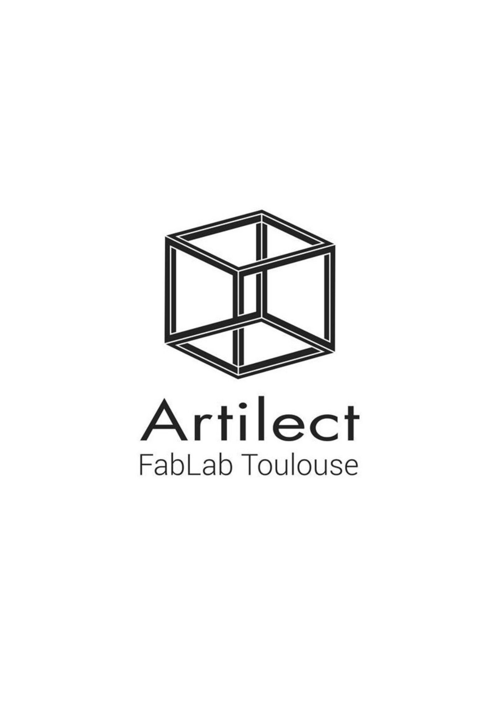
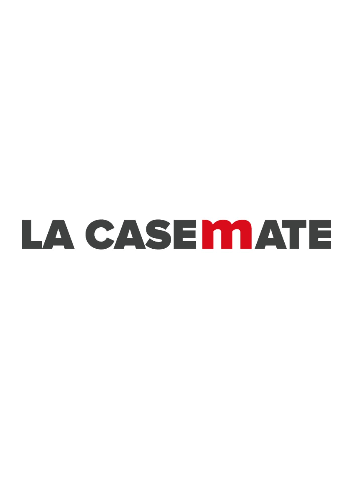
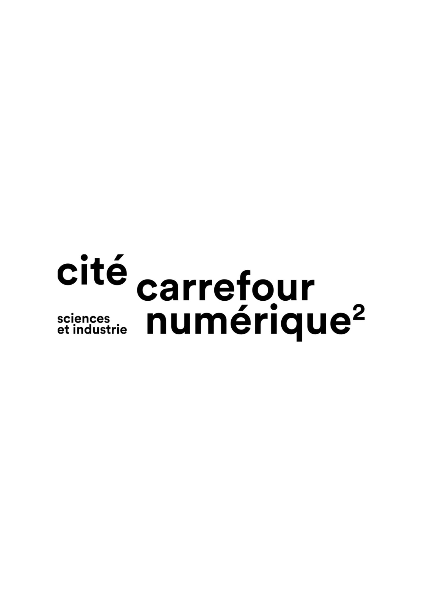

Recherche UX, Fablabs
UX Design / Ergonomie



Cliquez sur les photos pour faire défiler
Le Brief
Cela ma permis de découvrir les bases de l'UX design, liée avec la ressource « Ergonomie et accessibilité ». En partant du cas des fablabs, nous avons mené une enquête pour comprendre les attentes des utilisateurs et imaginer un service numérique adapté.
Mon Rôle
J'ai rédigé un guide d'entretien, réalisé une analyse des réponses et construit des personae. J'ai aussi comparé trois fablabs dans un benchmark (La Casemate, Carrefour Numérique, et Artilect) pour analyser leur fonctionnalité et leur accueil.
Outils utilisés
Méthodes d'enquête, Benchmark, Analyse qualitative, Figma pour les personae.
Compétences
UX Design, Ergonomie, Analyse d'enquête